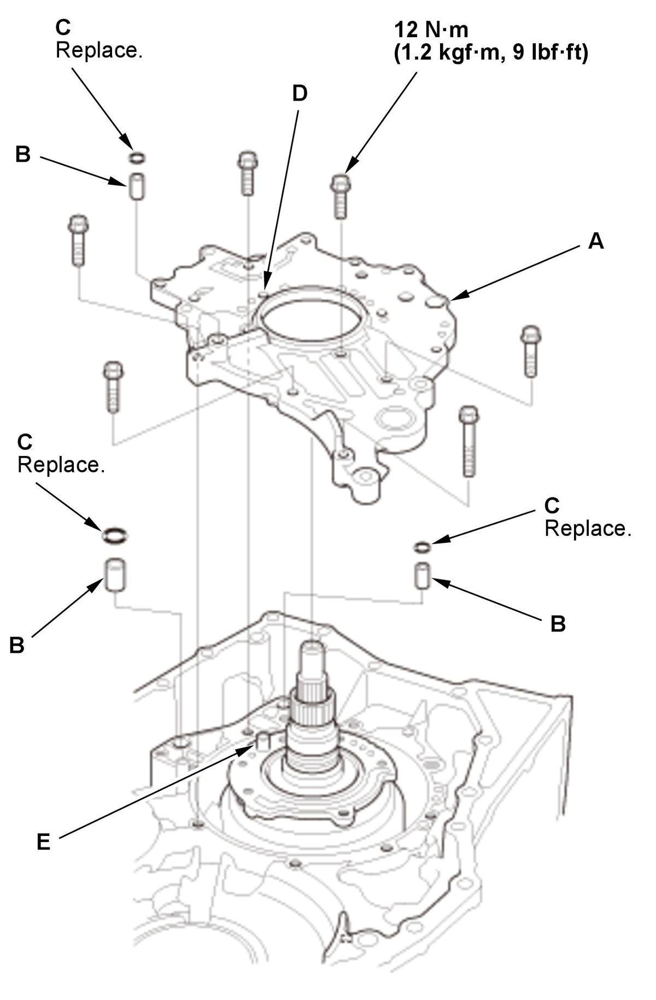
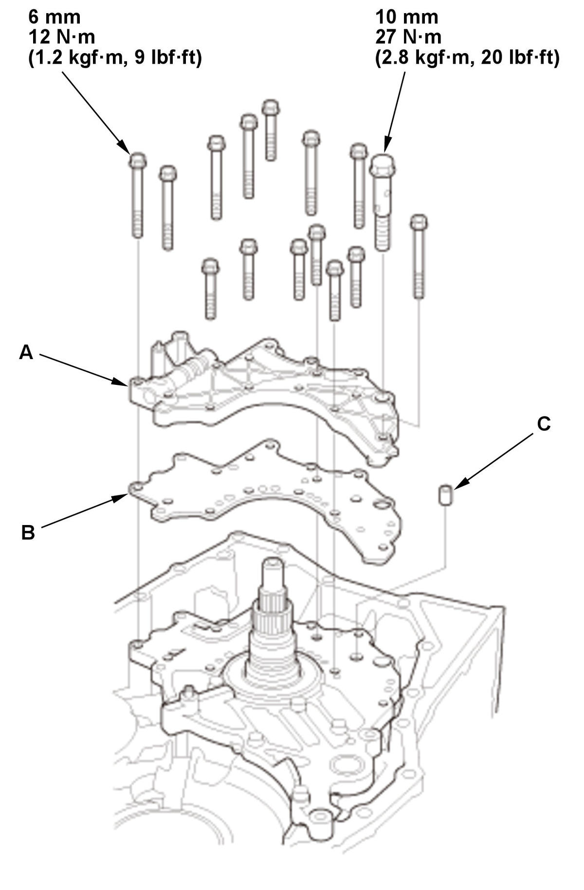
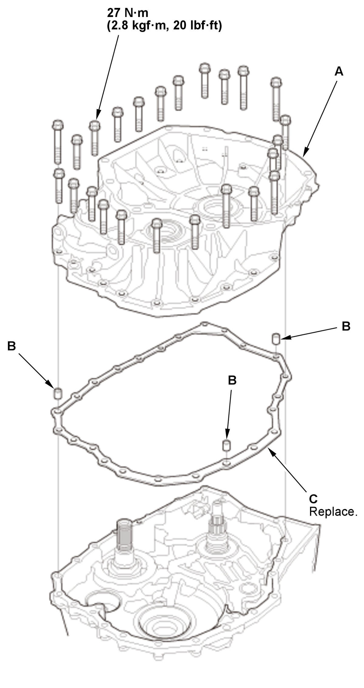

Input Shaft Thrust Clearance Adjustment (L15B7/L15BA/L15BY (CVT)): Adjustment
NOTE:
- If the transmission was disassembled, the input shaft thrust clearance must be adjusted.
- Apply a light coat of clean transmission fluid on all parts before installation.
- Reverse brake piston - Install
1. Install the reverse brake piston (A) with new O-rings (B). 2. Install the spring retainer/return spring assembly (C).
3. Put the reverse brake spring compressor attachment (A) on the spring retainer/return spring assembly (B). NOTE: Be sure the attachment is set over the return springs, not on the reverse brake piston (C).
4. Install the reverse brake spring compressor plate (D) with facing the UP mark to the upside using bolts (E).
5. Make sure that the reverse brake spring compressor bolt (F) is properly installed on the dent in the surface of the reverse brake spring compressor attachment.
6. Compress the return springs using the reverse brake spring compressor until the snap ring securing the spring retainer/return spring can be installed.
7. Install a new snap ring (G).
- Be careful not to deform the snap ring by opening/closing it excessively.
- Make sure the snap ring is firmly installed in the groove.
8. Remove the reverse brake spring compressor.
- Reverse Brake - Install
1. Install the disc spring (A). NOTE: Be sure to install the disc spring with the indented mark (B) facing the upward.
2. Starting with the reverse brake plate (C), alternately install the reverse brake plates and the reverse brake discs (D).
3. Install the reverse brake end-plate (E) with the flat side toward the top disc.
4. Install a new snap ring (F).
- Be careful not to deform the snap ring by opening/closing it excessively.
- Make sure the snap ring is firmly installed in the groove.
- Planetary Carrier Assembly - Install
1. Install the 40 x 63 x 5.5 mm washer (A) in the direction shown.
2. Install these parts in the following order:
- 50 x 65 x 3 mm thrust washer (B)
- Planetary carrier assembly (C)
- Sun gear (D)
- 32.5 mm cotters (E)
- Cotter retainer (F)
3. Install a new snap ring (G) using the snap ring pliers.
NOTE:
- Be careful not to deform the snap ring by opening/closing it excessively.
- Make sure the snap ring is firmly installed in the groove.
4. Install the ring gear (H).
5. Install the 24.5 x 39.1 x 3.2 mm thrust needle bearing (J) in the direction shown.
- Input Shaft Assembly - Install
1. Install the input shaft assembly (A) by aligning the clutch discs (B) with the sun gear (C), and aligning the clutch guide (D) with the ring gear (E). 2. Measure the depth (A) between the surface of the transmission housing (B) and the clutch guide (C), then make sure the measured value of the depth is within the recorded value when removing. - Stator Shaft - Install
1. Install the 29.55 x 45 x 3.62 mm thrust needle bearing (A) in the direction shown. 2. Install the 32 x 42 mm thrust shim (B).
NOTE: If you install a new 32 x 42 mm thrust shim, use the same thickness shim as the old one, or use the 2.10 mm (0.0827 in) thickness of the 32 x 42 mm thrust shim.
3. Install the stator shaft (C) with the dowel pin (D).
- Stator Shaft Flange - InstallFig 1: Stator Shaft Flange Components And Bolts With Torque Specifications (L15B7/L15BA/L15BY - CVT)

Courtesy of HONDA, U.S.A., INC.1. Install the stator shaft flange (A) with the dowel pins (B) and new O-rings (C) by aligning the hole (D) of the stator shaft flange with the dowel pin (E) of the stator shaft. - Manual Valve Body - InstallFig 2: Manual Valve Body, Separator Plate And Dowel Pin With Torque Specifications (L15B7/L15BA/L15BY - CVT)

Courtesy of HONDA, U.S.A., INC.1. Install the manual valve body (A) with the separator plate (B) and the dowel pin (C). - Torque Converter Housing - InstallFig 3: Torque Converter Housing Bolts And Dowel Pins With Torque Specifications (L15B7/L15BA/L15BY - CVT)

Courtesy of HONDA, U.S.A., INC.1. Install the torque converter housing (A) with the dowel pins (B) and a new gasket (C), then tighten the bolts in a crisscross pattern in at least two steps. - Input Shaft Thrust Clearance - Adjust
1. Install the magnet stand base as shown. 2. Set a dial indicator (A) on the tip of the input shaft (B).
3. Zero the dial indicator.
4. Measure the input shaft thrust clearance by lifting the input shaft up.
NOTE: Take measurements in at least three places, and use the average as the actual clearance.
5. If the clearance is out of the standard, remove the 32 x 42 mm thrust shim, and measure its thickness.
6. Select a new 32 x 42 mm thrust shim.
32 x 42 mm Thrust Shim
7. Install a selected 32 x 42 mm thrust shim, then recheck the clearance.
No. Thickness A 1.65 mm (0.0650 in) B 1.70 mm (0.0669 in) C 1.75 mm (0.0689 in) D 1.80 mm (0.0709 in) E 1.85 mm (0.0728 in) F 1.90 mm (0.0748 in) G 1.95 mm (0.0768 in) H 2.00 mm (0.0787 in) I 2.05 mm (0.0807 in) J 2.10 mm (0.0827 in) K 2.15 mm (0.0846 in) L 2.20 mm (0.0866 in) M 2.25 mm (0.0886 in) N 2.30 mm (0.0906 in) O 2.35 mm (0.0925 in) P 2.40 mm (0.0945 in) Q 2.45 mm (0.0965 in) R 2.50 mm (0.0984 in) S 2.55 mm (0.1004 in) T 2.60 mm (0.1024 in) Standard: 0.15-0.25 mm (0.0059-0.0098 in)